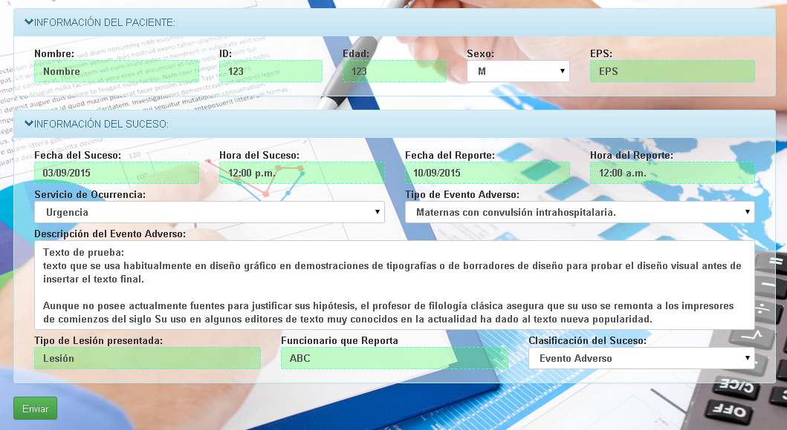

Un evento adverso es aquel que genera daño al paciente, después de que éste ingresa a una institución médica, y está relacionado más con el cuidado proveído que con la enfermedad de base.

FORMATO PARA REPORTE DE INCIDENTES Y EVENTOS ADVERSOS
FORMATO UNICO DE REPORTE DE SOSPECHA DE REACCIÓN ADVERSA A MEDICAMENTO-FORAM
Reporte ante la más mínima sospecha de reacción adversa a medicamento; registre la información solicitada de forma clara, legible, sin tachones, enmendaduras ni uso de corrector y según los parámetros establecidos en la segunda página